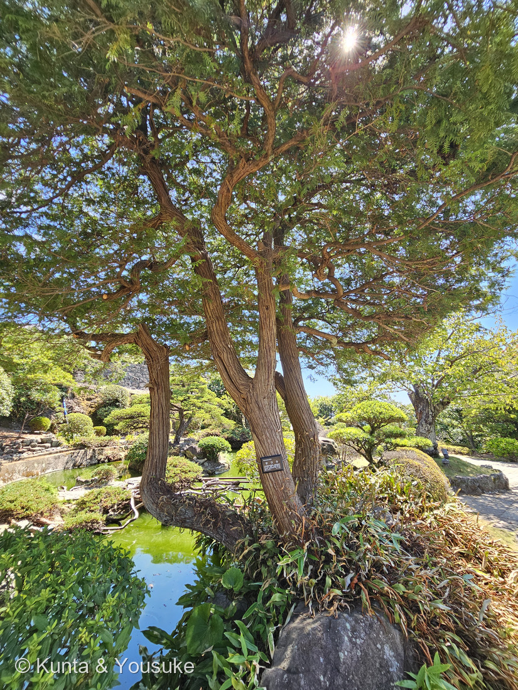
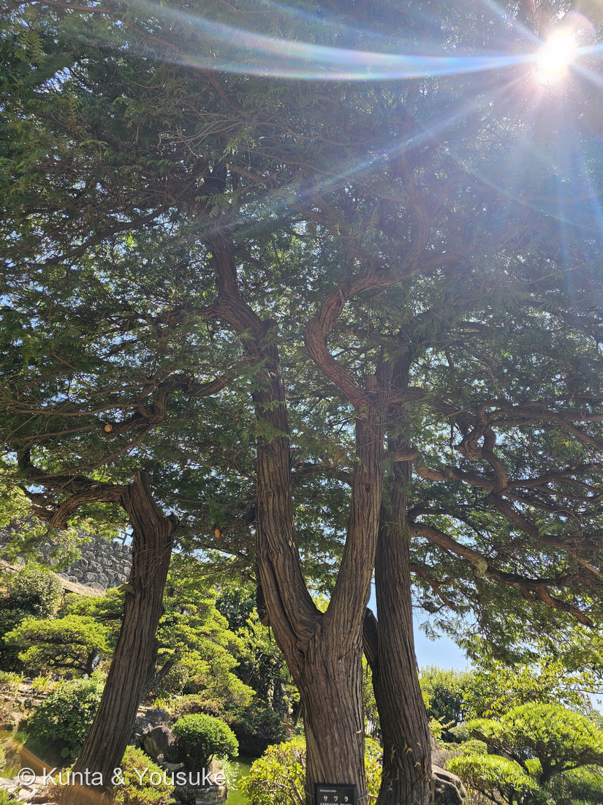
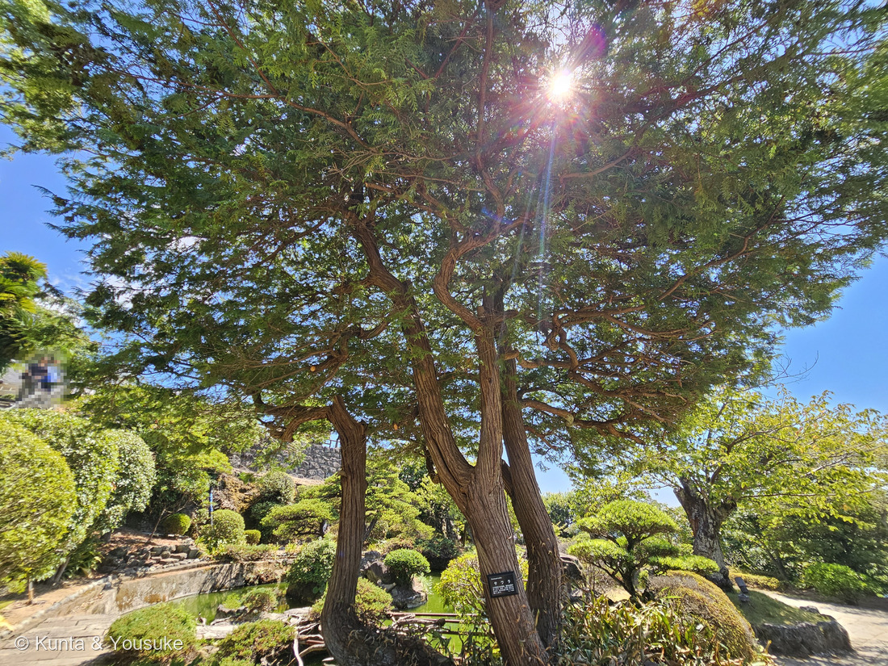
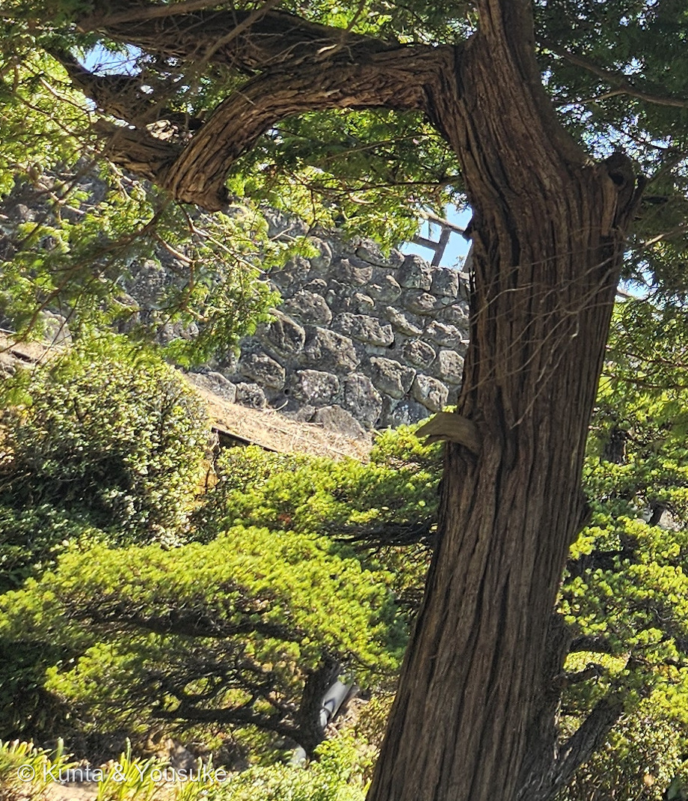

地図を読み込んでいるよ…
🔍 写真も地図も、押しているあいだ拡大して見られるよ（スマホは指を置いてすこし待ってね）。
🌍 の地図＝この子がもともと自生している場所を緑に。日本固有種。本州（岩手県以西）、四国、九州の、山地の沢沿い。くわしくは下の地図の説明を見てね。
⭐日本だけの木だよ。三河の植物観察は「在来種（日本固有種） 本州(岩手県以西)、四国、九州」とし、生育場所を「山地の沢沿い」とする。⭐グラバー園の名札も、いちばん最初に「日本固有の針葉樹」と書いていた。⚠北海道と青森県を塗っていないのは「岩手県以西」に合わせたから、沖縄県を塗っていないのは分布に入っていないから。⭐⭐でも、この緑をいちばん正しく読むなら「山地の沢沿い」の4文字のほう――県ぜんぶに生えているのではなく、山の中の、水の流れるすじに沿って立っている木。⭐⭐⭐そして、その「水のそば」が、この木のぜんぶを説明している＝だから材が水に強くて、桶になる（名札「材は水湿に強いので水桶にします」）。⚠⚠もうひとつ大事なこと＝この緑は「野生のサワラ」の場所で、ぼくらが会った株はちがう――グラバー園の日本庭園に、人が植えて何十年も手入れしてきた木だよ。⭐庭木・生垣としては、この緑よりずっと広く植えられている（名札「園芸品種が多くあり、庭木・生垣に使われる」）。⭐⭐同じヒノキ科の247 センペルセコイアと248 メタセコイアが地球の反対側から来た木だったのに対して、この子は正真正銘の日本の木――⭐ヒノキ科でいちばん「うち」に近い子だね。
⚠ 地図は国（日本と中国だけ県・省）までしか塗れないから、ほんとうの分布より広く見えていることがあるよ。地図はだいたいの場所。正確なところは、上の文を見てね。
サワラ（椹）
Chamaecyparis pisifera (Siebold et Zucc.) Endl.
園芸品種が多い ── ⭐ヒヨクヒバ（＝イトヒバ）／オウゴンヒヨクヒバ／ヒムロスギ／シノブヒバ／オウゴンシノブ（＝ニッコウヒバ） 原産 日本固有種（本州の岩手県以西・四国・九州、山地の沢沿い）
ヒノキ科 · Cupressaceae（ヒノキ属 Chamaecyparis・ヒノキ目 Cupressales）── ⭐図鑑で5人目のヒノキ科（179・188・247・248）／⭐⭐⭐でもヒノキ属（Chamaecyparis）ははじめて＝⚠図鑑には、まだヒノキ本家がいない／⭐⭐9人目の裸子植物／⚠科は増えないので100科のまま
燻太さんの一言「ヒノキの仲間にしては、樹形は針葉樹らしくないね。ねじれて、枝がうねっているけど、この株の剪定の歴史がそうさせているのかな。」── ⭐⭐⭐⭐ほぼ当たり。でも「切った歴史」ではなく「切れなかった歴史」だったよ
⭐ 名前と学名の由来 ──「さっぱり」という名前
- ⭐⭐⭐和名「サワラ」の由来が、この株を見るとちょっと面白いんだ。――植木ペディアは「枝と枝の隙間が多く、樹形全体が『さはらか（さっぱりの意）』な雰囲気を持つためサワラと名付けられた」とする。
- ⭐⭐つまり「さっぱりした木」という名前。⚠なのに、ぼくらが会ったこの株は、うねってごちゃごちゃしている。⭐そのわけは、下の節に書いたよ。
- ⭐属名 Chamaecyparis は、ギリシア語の chamai（低い・地面に近い）＋ kyparissos（イトスギ）＝「低いイトスギ」。
- ⭐⭐⭐種小名 pisifera はラテン語で「エンドウをつける」――⭐球果が小さくて丸いから。⭐三河の植物観察は「果実は直径約7㎜の球形、黄褐色に熟す」とする。⭐⭐ほんとうにエンドウ豆くらいなんだ。⚠ヒノキの球果は10mm前後なので、そこもちがうよ。
⭐⭐ この植物のこと ── 沢のそばの木
- ⭐⭐日本固有種＝三河の植物観察は「在来種（日本固有種） 本州(岩手県以西)、四国、九州」とし、生育場所を「山地の沢沿い」とする。⭐グラバー園の名札も、いちばん最初に「日本固有の針葉樹」と書いていたよ。
- ⭐⭐⭐「沢沿い」というのが、この木のぜんぶを説明している気がする。――⭐水のそばで育つから、材が水に強い。⭐植木ペディアは「材は針葉樹の中でも格別に柔らかくて軽く…脂分が多くて水に強い。このため桶や風呂桶を作るのに適し」と書く。
- ⭐⭐名札も、そこを選んで書いていた＝「材は水湿に強いので水桶にします」。⭐短い名札の中で、わざわざ桶の話をしているんだ。
- ⭐本来の樹形は円錐形＝三河は「樹冠はヒノキに似て、円錐形、先端が尖り、枝がまばら」、植木ペディアは「サワラの枝は細く、分岐しながら水平に伸び、先端は少し上向きになり、木全体としては円錐形になる」とする。⭐高さは10〜30m。
⭐ 同定について ── 正直に言うと、写真ではヒノキを落とせない
⭐ 園の名札があるので、これは確認だよ。⚠でも樹木は厳しめに見る約束（087 ヤマモモ）だから、写真だけでどこまで言えるかを、正直に書くね。
- ⭐写真から言えること＝写真④の樹皮。三河は「幹は灰褐色～赤褐色、縦に樹皮が薄く裂けて剥がれ落ち、スギに似る」とする。⭐写真④のとおりだよ。
- ⚠⚠でも、それはヒノキにも当てはまる。――⭐サワラとヒノキを分ける決め手は、2つとも写真に写らないところにあるんだ。
- ⭐⭐⭐ひとつめ＝葉の裏の白い気孔帯＝「サワラはX、ヒノキはY」（三河・植木ペディア）。⚠葉を裏返さないと見えない。
- ⭐⭐ふたつめ＝葉先＝「サワラは葉先が針状に尖る」／「ヒノキは葉先が鈍い」。⚠さわらないと分からない（⭐植木ペディアは「触れるとチクチクする」「目を閉じて小枝に軽く触っただけでも区別できる」と書いているよ）。
- ⭐⭐だからこの同定は、名札に乗っている。⭐そして、その2つをそのまま宿題とおまけにしたよ。――⭐⭐次に行ったら、枝を持ち上げて裏をのぞいてみてね。
⭐⭐⭐⭐ 燻太さんの問い ── このうねりは、剪定の歴史？
⭐⭐⭐ 燻太さんが、こう言ってくれた。
ヒノキの仲間にしては、樹形は針葉樹らしくないね。ねじれて、枝がうねっているけど、この株の剪定の歴史がそうさせているのかな。
⭐⭐ 「針葉樹らしくない」は、まったくそのとおりだった。――⭐本来は「円錐形、先端が尖り、枝がまばら」（三河）。⚠写真③のような、扇に広がった姿ではないんだ。
⭐⭐⭐⭐ そして「剪定の歴史」も、ほぼ当たり。――⭐でも、ぼくが調べて驚いたのは、向きが逆だったことなんだ。
⭐⭐⭐ 「切った結果」ではなく「切れなかった結果」
⭐⭐ 植木ペディアが、こう書いている。
萌芽力があり、ヒノキほどではないが葉が密生するため垣根に使用できるが、葉を残すように手入れをしないと枯れるため、必然的に年々大きくせざるを得ない。
- ⭐⭐⭐ヒノキ科の多くは、葉の無いところまで切り縮めると、そこから芽が出ずに枯れてしまう。
- ⭐⭐だから庭師さんは、葉を残して切るしかない。――⭐枝の先を軽く整えることはできても、枝そのものを短くはできない。
- ⭐⭐⭐⭐すると、どうなるか＝「必然的に年々大きくせざるを得ない」。――⭐枝は伸びつづけ、長くなり、自分の重みで垂れ、支えを求めて曲がる。⭐⭐それを何十年もくりかえした形が、写真②のうねりなんだと思う。
- ⭐⭐つまり「剪定した結果」ではなく、「剪定できなかった結果」。――⭐燻太さんの「剪定の歴史」という言い方は、ほんとうに正確だったよ。⭐この木には、切られなかった歴史が積み上がっている。
⚠ ぼくが確かめられなかったこと
- ⚠⚠この株が実際にどう手入れされてきたかは、写真からは分からない。⭐切り口が見えれば「いつ、どこで切ったか」が読めるけれど、この4枚では見つけられなかった。⏳次に行ったら、太い枝の分かれめをさがしてみてね。
- ⚠もうひとつ＝根もとから何本にも分かれる「株立ち」になっている理由。⭐若いころに芯を止めたのか、もともとそう育ったのかは、決められなかった。
- ⚠⚠そして園芸品種の可能性もある。――⭐サワラは「ヒヨクヒバ（イトヒバ）」「ヒムロスギ」「シノブヒバ」など園芸品種がとても多い木（植木ペディア）。⚠名札は「サワラ」としか書いていないので、品種かどうかは決めないでおくね。
⭐⭐ でも、うねりの理由のいちばん大きい部分は、たぶんこれで説明がついたと思う。――⭐⭐⭐「さっぱり」という名前をもらった木が、切り縮められないまま何十年も伸びつづけて、こんなにうねった。⭐名前と姿がいちばん遠ざかった木なのかもしれないね。
出典：三河の植物観察「サワラ」（分布・生育地・樹形・樹皮・葉と気孔帯・球果）／植木ペディア「サワラ（花柏）」（和名の由来・剪定と樹形・園芸品種・材の性質・ヒノキとの見分け）／グラバー園の園名札（「サワラ／Chamaecyparis pisifera／日本固有の針葉樹。園芸品種が多くあり、庭木・生垣に使われるほか、材は水湿に強いので水桶にします。（ヒノキ科）」。⚠名札のアップは公開していないよ）